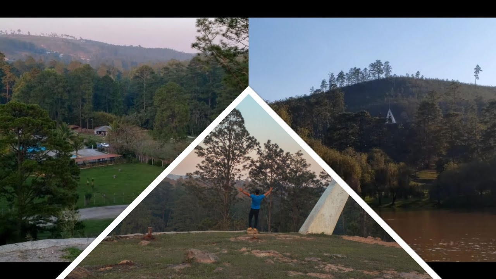

Honduras todo esta aquí

El Parque Aurora, situado en las cercanías de Zamorano, se promociona como una escapada económica y tranquila para los habitantes de Tegucigalpa que deseen disfrutar de la naturaleza sin alejarse demasiado de la ciudad. La propuesta del lugar se centra en ofrecer aire puro, silencio y espacios abiertos para caminar o realizar un día de campo con la familia, según información difundida en segmentos de recomendaciones turísticas locales. Su cercanía lo convierte en una alternativa viable para quienes buscan romper con la rutina urbana durante un fin de semana sin planes elaborados o un presupuesto alto. El parque ha sido descrito como un entorno donde predomina el sonido de la naturaleza sobre el bullicio ciudadano, con áreas habilitadas para el descanso y la conversación.
Zambrano Honduras